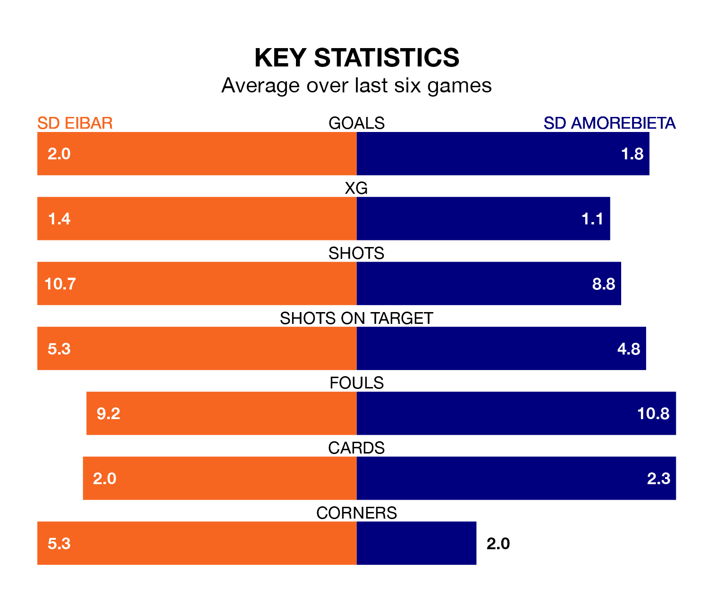

Struggling SD Eibar face SD Amorebieta at Estadio Municipal de Ipurúa on Sunday looking to build on a win in their last league outing.
After securing all three points with a 1-2 victory over Albacete Balompié on April 28, Eibar sit third in the Segunda División.
They travel to play an Amorebieta side 21st in the standings, who were held in their last match, 2-2 against Burgos CF, on April 27.
With 60 goals in 37 games so far this season, Eibar are the league's highest scorers with 1.6 goals per game. And they are conceding at an average rate, letting in 42 goals at a rate of 1.1 per game.
Amorebieta, meanwhile, are below average scorers, with 0.9 goals per game, compared to a league average of 1.1. They have conceded 1.3 goals per game.
In Jon Bautista Orgilles, the home team have one of the league's most on-form strikers so far this season. He has notched 16 goals in 32 appearances, to sit third in the scoring charts.
His goal rate of one every 136 minutes is much quicker than that of Eneko Jauregi Escobar, the visitors' top scorer with a goal every 326 minutes, and a total of six goals in 32 games.
In the last five years, Eibar and Amorebieta have played each other on five occasions. Eibar won three of them, Amorebieta one, and they drew once.
On average, Eibar scored 2.0 goals and Amorebieta 1.2 in those matches.
Their last meeting was on October 8, when Eibar won 2-1 away.
Eibar are in mixed form in the Segunda División, with three wins and three losses from their last six games.
With three wins and two draws over that period, Amorebieta's form is slightly better – they have taken 11 points from 18, compared to Eibar's nine.
Updated: 12:00 (UTC), 02/05/24